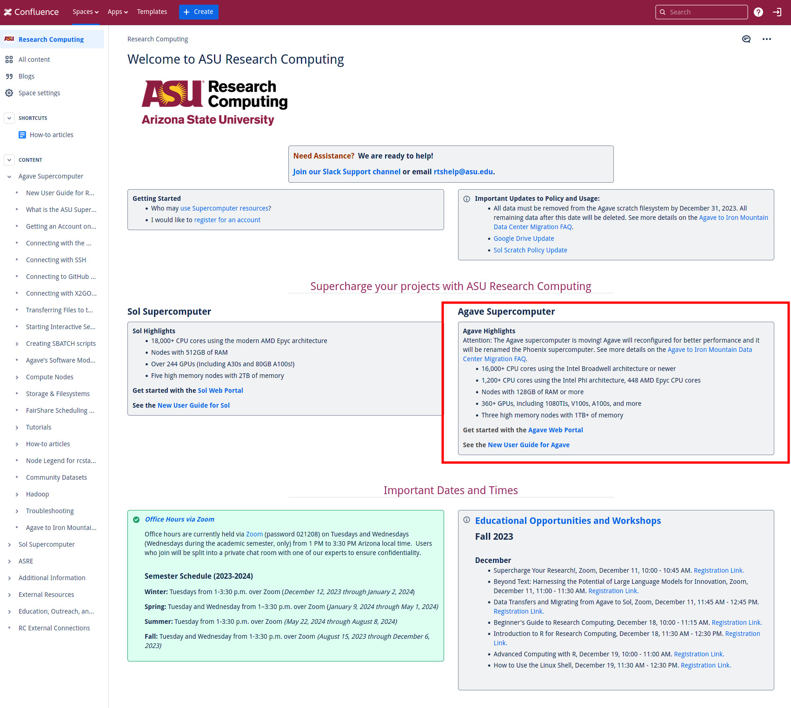

AGAVE Access
This document provides useful references and step-by-step guidelines for accessing and utilizing the AGAVE supercomputer.
Useful References
Here are some useful references for information on AGAVE:
Prerequisites
Before accessing AGAVE, ensure the following prerequisites are met:
VPN Connection: - Run Cisco Secure Client and login to the ASU network. - Under the connect field, enter sslvpn.asu.edu. - Click connect, and enter your ASURITE credentials, including the Duo Mobile Code for dual-factor authentication.
AGAVE Login Steps
Using SSH to access AGAVE supercomputer:
SSH Login: - Run the following command to log in:
$ ssh -Y ASURITE@agave.asu.edu
Replace ASURITE with your ASURITE username.
Enter your ASURITE password, ensuring Cisco Secure Client is running.
Interactive Node: - Once logged in, switch from the login node:
$ interactiveActivate Conda Environment: - Activate your conda environment:
$ source /home/ASURITE/anaconda3/bin/activate
Using Web Browser to access AGAVE Virtual Desktop:
Open AGAVE Portal: - Click here to open the AGAVE Web Portal: AGAVE Web Portal. - Navigate to Agave Web Portal link on the ASU Research Computing website.
Start Interactive Session: - Click Get started with the Agave Web Portal and navigate to My Interactive Sessions. - Select Agave Virtual Desktop under Interactive Apps. - Fill out the fields Partition, QOS, Cores, Session Wall Time, and click Launch. - Once resources are ready, click the Launch Agave Virtual Desktop button.
{kind=link}
Loading Modules
Check Available Modules: - Run the following to list all available modules:
$ module -l avail
Load Modules: - Load a specific module:
$ module load module_name/version_number
View Loaded Modules: - Check currently loaded modules:
$ module list
Unload Modules: - Unload a specific module:
$ module unload module_name/version_number
Unload all modules:
$ module purge
Partitions at AGAVE
Before submitting jobs, understand the partitions available:
Check Partition Status: - For a specific partition:
$ sinfo -p partition_name
For all partitions:
$ sinfo -a
Monitor Jobs: - Watch a specific job:
$ squeue -j job_id
Watch all your jobs:
$ watch 'squeue -u ASURITE'
Running pattern_sim through CrystFEL
Ensure you’re logged into AGAVE and have loaded the crystfel module.
Access and Execution:
Access the script at /home/ASURITE/Development/run_pattern_sim.sh.
Run pattern_sim through CrystFEL using run_pattern_sim.sh.
Arguments:
RUN: Run name (e.g., sim_run1).
GEOM_FILE: Path to the geometry file.
PDB_FILE: Path to the PDB file.
INTENSITY_FILE: Path to the intensity file.
TASKS: Number of tasks.
PARTITION: Partition name.
QOS: Quality of service.
TIME: Time limit.
TAG: Job tag.
Run the Script:
$ ./run_pattern_sim.sh RUN GEOM_FILE PDB_FILE INTENSITY_FILE TASKS PARTITION QOS TIME TAG
Indexing Images indexamajig through CrystFEL
Ensure you’re logged into AGAVE and have loaded the crystfel module.
Preparation:
Verify .h5 files from pattern_sim.
Create a list of images to index:
$ ls /path/to/h5/files/*.h5 > my_images.list
Load necessary modules (ccp4 and crystfel).
Indexing:
Index images using indexamajig:
$ indexamajig -i my_images.list -o output.stream -g geom_file.geom --additional-options
Refer to SLURM Scripts <slurm_script> for more information on submitting jobs.
Note
Adjust arguments as necessary and refer to CrystFEL documentation for detailed usage.